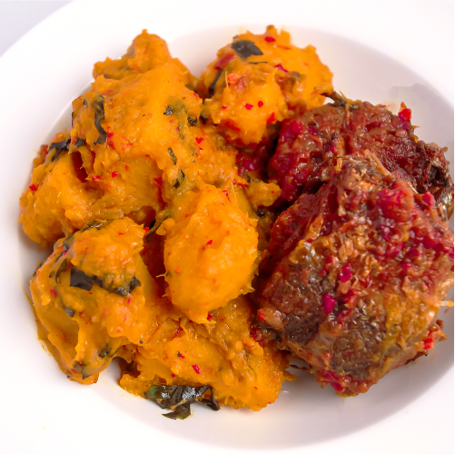

Nigerian Yam Porridge

Description
Yam pottage/Yam Porridge (Asaro) Recipe - Asaro which is also
known as Yam pottage or Yam porridge is a very delicious Yam
recipe though it's eaten by most tribes in Nigeria however,
it is more common in the Yoruba speaking parts of Nigeria. It's
also easy to make. If you love yam, it's a must-try recipe!
Ingredients
- 1/2 Yam medium-sized Puna
- 1 Onion medium-sized
(diced)
- 1.5 Pepper Sauce a blend of peppers,
tomatoes, and Onions
- 1/2 Cup Palm Oil of
fresh
- 2 Tablespoons Crayfish
- Water
- Crab Meat Stockfish or dried fish
- Crab Meat Stockfish or dried fish
Steps
- Peel and cut the Yam into medium-sized chunks and rinse
a couple of times
- Put the Yams inside a Pot, add
water just to the level of the Yams and let it cook
for 15 minutes on medium to high heat
- Add the pepper sauce palm oil, onions, crayfish, salt,
and stock cubes, and allow it to cook for an additional
10 minutes on low heat.
- Add the crabmeat
(You can use whatever addition you prefer at this
point like, Smoked Fish, Prawns, or smoked
Turkey.
- Mash the Yams with a Potato masher
or a wooden spoon. I love to mash some yams
and keep some chunks. Gives more texture!
- Stir in the parsley (spinach, kale, or ugwu)
- Allow it to simmer for an additional 3 to 5 minutes
and enjoy while still hot!